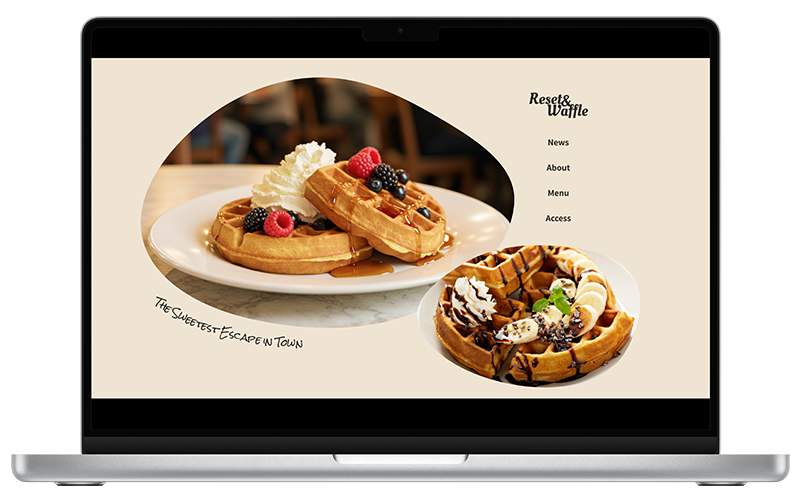
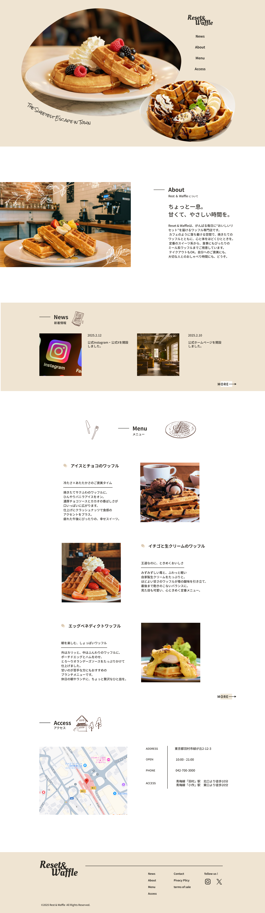

架空のワッフル屋サイト
- 自主制作
- #WEBサイト(デザイン)

| 概要 | 架空のワッフル屋「Reset & Waffle」WEBサイトのデザインを制作しました。 |
|---|---|
| 目的 | 地元では知られているものの、情報発信が少なく、新規客への認知が不足していました。 お店のイメージをわかりやすく発信し、認知度を高めて新たなお客様の来店につなげることを目的としました。 |
| ターゲット | カフェ巡りが好きでリラックスできる空間を求める20代〜40代の女性 |
| 制作にあたって | お店の魅力を視覚的に伝えることで、常連のお客様はもちろん、 訪れたことのない新規層にも興味を持ってもらえるよう意識しました。 |
| デザイン | ワッフルのふんわりとした質感をイメージし、暖かいトーンの配色で全体をまとめました。 また、随所に手書き風のイラストを取り入れることで、温かみと親しみやすさのある世界観を表現しています。 |
| 制作期間 | 企画・ワイヤーフレーム 1日 デザイン 2日 |
| 使用したツール | Figma |
